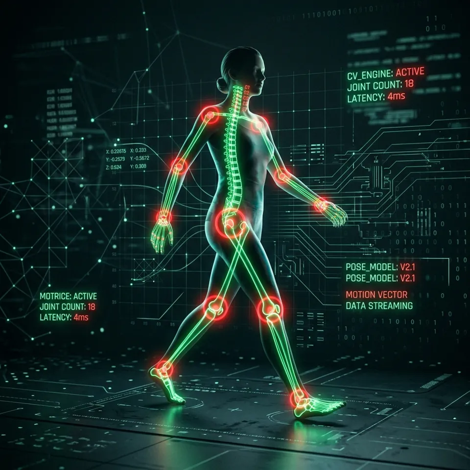

From webcam frame to counted rep
The biomechanical kinematics and computer vision behind every tracker in the lab, in three stages.
Body detection via computer vision
The platform is powered by Google MediaPipe Pose, a machine learning framework capable of high-fidelity body tracking.
When you start the camera, the video feed is processed entirely locally on your device in real time. The model analyses each frame and identifies 33 distinct 3D landmarks across your body, including joints such as shoulders, elbows, wrists, hips, knees, and ankles.
By mapping out these key points, the system understands your spatial orientation and exact posture at any given moment, without any wearable sensors.

Calculating biomechanical angles
Once the model has mapped the coordinates of your joints (their X and Y positions on screen), geometric formulas give the angles between them.
To measure your elbow during a biceps curl, for example, we use three points: the shoulder (A), the elbow (B), and the wrist (C). The two-argument arctangent returns the angle at B in degrees:
// angle at B, between segments BA and BC
let radians = Math.atan2(c.y - b.y, c.x - b.x)
- Math.atan2(a.y - b.y, a.x - b.x);
let angle = Math.abs(radians * 180 / Math.PI);
if (angle > 180) angle = 360 - angle;
The result is smoothed over the last five frames and refreshes up to 60 times per second.
Drawing conclusions with a state machine
Real-time angles feed a state machine that evaluates the movement and counts repetitions.
Every exercise has defined physiological thresholds. For a squat, the system watches your knee angle: standing straight it sits near 180°, and it falls as you lower your hips.
- The “down” stage: once your knee angle drops below 100°, you have reached the bottom of the squat and the state switches to “down”.
- The “up” stage: as you stand, if the angle exceeds 160° and the previous state was “down”, a full repetition is registered.
Because a rep must pass through both thresholds in order, half-reps and bounces never count. Only full range of motion does.